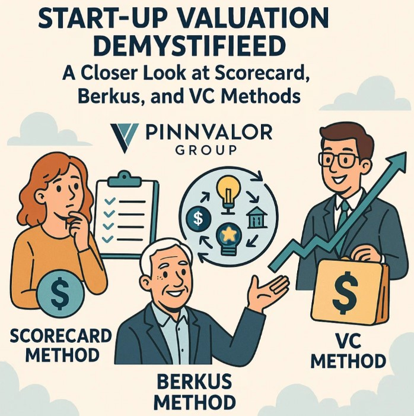

Start-up Valuation Demystified: A Closer Look at Scorecard, Berkus, and VC Methods
In the world of start-ups, valuation is both an art and a science. Unlike mature companies with long operating histories and stable cash flows, start-ups often lack concrete financial data. Yet, investors and founders must agree on a value that justifies equity stakes and funding rounds. This is where specialized valuation techniques come into play. In this blog, we explore three of the most widely used start-up valuation methods: the Scorecard Method, Berkus Method, and the Venture Capital (VC) Method.
How do investors value start-ups when there's no revenue, no profit, and only potential?
When balance sheets fall short, Scorecard, Berkus, and VC methods rise to value what truly matters—innovation, execution, and future promise.
🔍 Why Traditional Valuation Doesn’t Work for Start-ups
Traditional valuation techniques like Discounted Cash Flow (DCF) or Market Multiples often require reliable revenue projections and historical financials — luxuries most early-stage start-ups don’t have. Instead, start-up valuation often hinges on intangibles like team strength, market potential, and competitive advantages. Hence, alternative frameworks have emerged to address these unique challenges.
1. 📊 The Scorecard Method
What It Is:
The Scorecard Method compares the target start-up to a typical funded start-up in the same region and industry. It then adjusts the average valuation based on specific qualitative factors.
How It Works:
- Determine the average pre-money valuation for similar start-ups in the region.
- Adjust this average using a weighted scorecard of critical factors:
| Factor | Typical Weight (%) |
|---|---|
| Strength of the Management Team | 30% |
| Size of the Opportunity | 25% |
| Product/Technology | 15% |
| Competitive Environment | 10% |
| Marketing/Sales Channels/Partnerships | 10% |
| Need for Additional Investment | 5% |
| Other | 5% |
Best For: Angel investors and early-stage VCs evaluating pre-revenue or seed-stage start-ups.
2. 💡 The Berkus Method
What It Is:
Created by angel investor Dave Berkus, this method assigns monetary values to five key success drivers in a start-up, each capped at $500,000 (or similar depending on region).
How It Works:
Each of the five elements is valued up to $500,000 based on risk reduction and tangible evidence:
| Component | Max Value |
|---|---|
| Sound Idea (basic value) | $500,000 |
| Prototype (reduces technology risk) | $500,000 |
| Quality Management Team | $500,000 |
| Strategic Relationships (reduces market risk) | $500,000 |
| Product Rollout or Sales | $500,000 |
Total Max Pre-Money Valuation: $2.5 million
Best For: Pre-revenue start-ups with some tangible development (like a prototype) but limited market traction.
3. 💼 The Venture Capital (VC) Method
What It Is:
This method is commonly used by venture capitalists to back-calculate the current valuation from a desired exit value, return expectations, and projected time horizon.
How It Works:
- Estimate the exit value (e.g., future acquisition or IPO value).
- Determine the required ROI (Return on Investment), e.g., 10x.
- Calculate post-money valuation:
Post-money Valuation = Exit Value / Expected ROI - Deduce pre-money valuation:
Pre-money Valuation = Post-money Valuation - Investment Amount - Calculate equity to be offered:
Equity Stake = Investment / Post-money Valuation
Best For: Start-ups with projected financials and VCs targeting specific exit strategies.
🔄 Comparative Snapshot
| Feature | Scorecard Method | Berkus Method | VC Method |
|---|---|---|---|
| Stage Focus | Early-stage | Pre-revenue | Seed to Growth stage |
| Quantitative? | Semi-quantitative | Semi-quantitative | Fully quantitative |
| Data Requirement | Comparable valuations | Business development proof | Exit projections & ROI |
| Main Use | Angel Investing | Idea Validation | Venture Capital Investment |
💬 Final Thoughts
There’s no one-size-fits-all formula for valuing a start-up. The Scorecard and Berkus methods are ideal when historical data is limited but qualitative indicators are strong. The VC Method is preferred when a start-up has traction and a clearer path to exit.
Ultimately, valuation is a negotiation — a meeting point between founder expectations and investor risk appetite. Understanding these methods equips you to navigate that negotiation more confidently and credibly.
🔗 Ready to Take Your Start-up Valuation to the Next Level?
Whether you're pitching to investors or benchmarking your worth, knowing these frameworks is essential to framing your story.